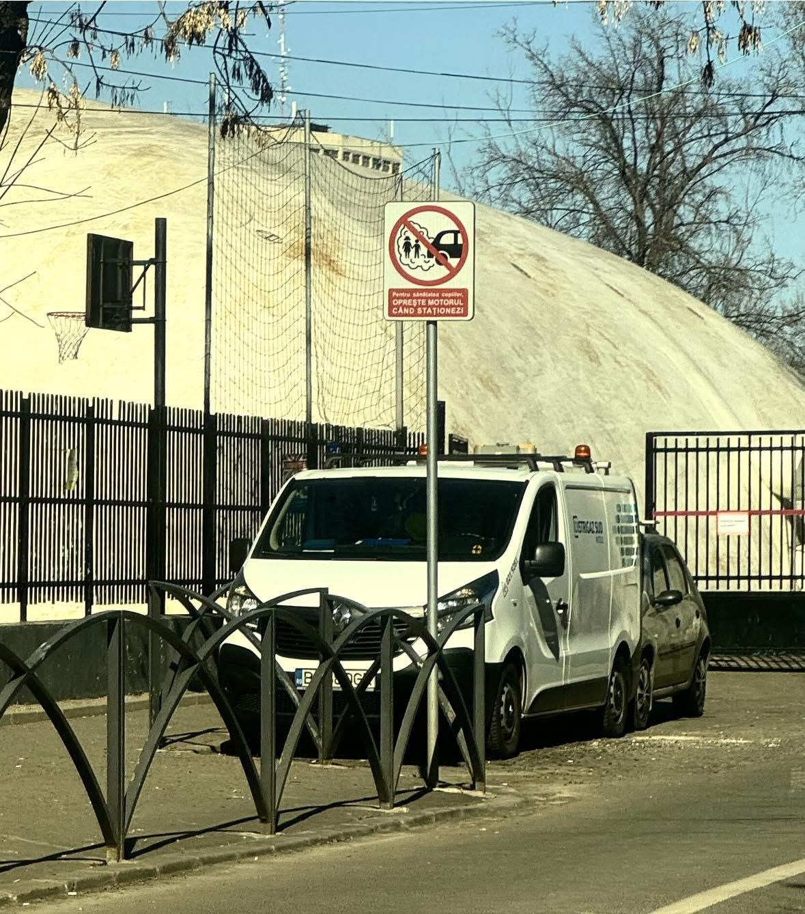
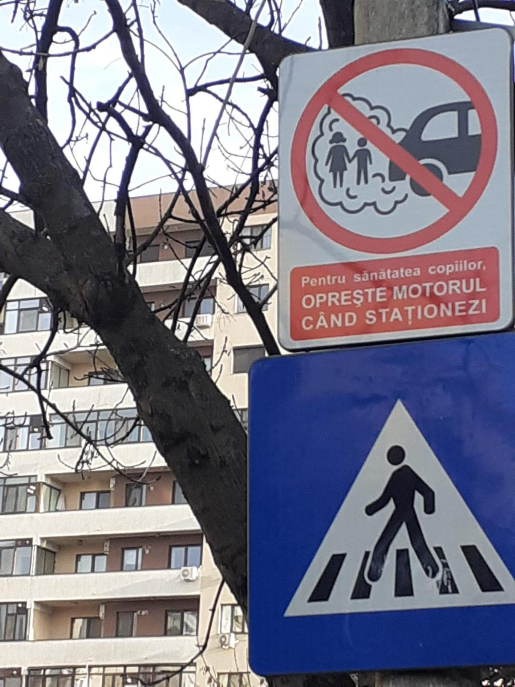
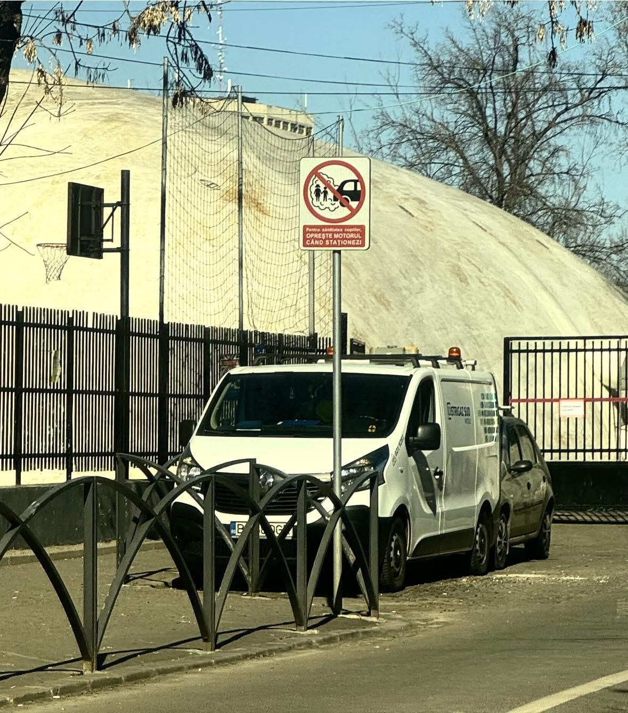
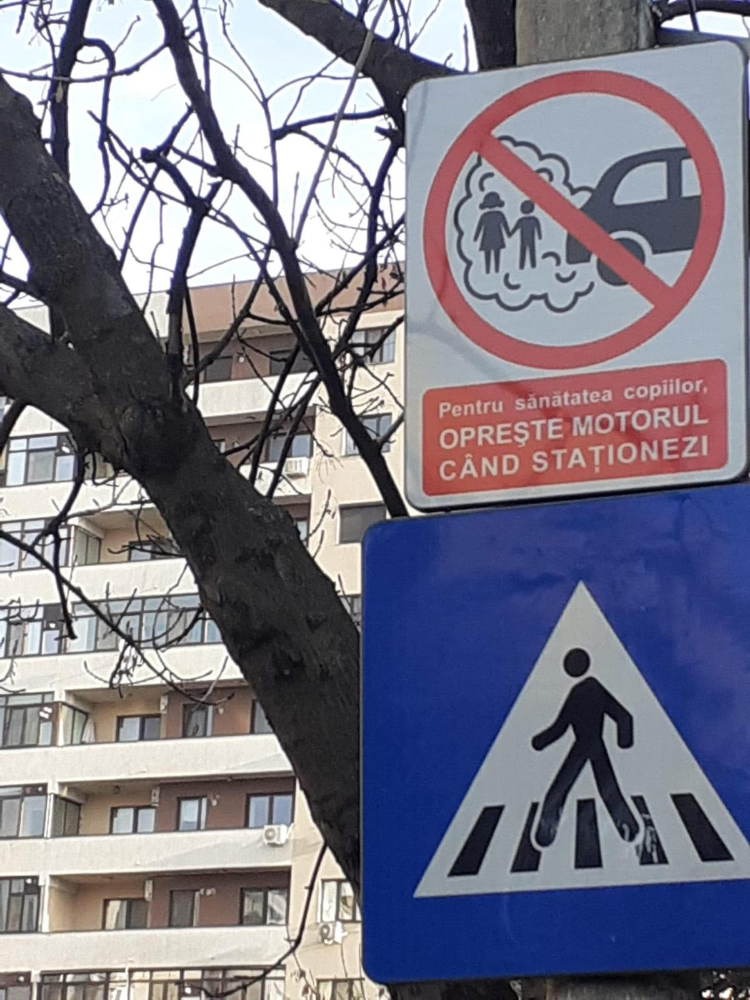

Advocacy
A. Cum a început campania Oprește Motorul
În 2020, 300 de mame din cartierul Grivița-Domenii făceau chetă pentru a printa și distribui afiise cu mesajul „Oprește Motorul”. A fost un efort comun și continuu, implicarea lor fiind prezentă și azi.
B. Întâlnire Primar Sector 6
Primăria Sectorului 6 a fost prima instituție ce a adoptat campania, trecând în timp record proiectul de HCL prin Consiliul Local, toate unitățile de învățământ având în dreptul lor câte un panou metalic, de informare, cu grafica Oprește Motorul. La ședință au participat Elena Lucaci (Părinți de Cireșari), Oana Neneciu (Ecopolis), Ciprian Ciucu și reprezentanți ai aparatului administrativ cât și șeful Poliției Locale S6.
 



C. Campanie în școli
Împreună cu Ecopolis, am ajuns în peste 50 de școli din București cu panouri informative privind poluarea aerului, ambasadorii campaniei fiind elevii școlilor.
D. Cetățeni pentru Aer Curat
În cadrul proiectului Cetățeni Pentru Aer Curat implementat de Ecopolis, Părinți de Cireșari a organizat un festival stradal comunitar având ca temă poluarea aerului. La eveniment a avut loc o dezbatere publică pe tema poluării la care au participat Consilieri Generali, dna. dr. Beatrice Mahler, Primarul Sectorului 1 George Tuță și reprezentanți ai societății civile. La eveniment am realizat un experiment ce ne arată câți metri cubi de noxe se adună într-un sac din țeava de eșapament a unei mașini la ralanti.
E. Campanie TikTok #CocalAir
O campanie cu situații în care se staționează cu motorul pornit, imagini generate cu AI, în urma comentariilor primite pe TikTok.
F. Campanie media
G. Campania Copiilor din Cartier
Mai mulți copii din cartier au construit un proiect propriu Oprește Motorul. Un material video pregătit de ei în totalitate: text, filmare, montaj.
H. Depunere la Senat a proiectului de modificare a codului rutier
Părinți de Cireșari și Ecopolis, prin Dragoș Popescu senator independent, au depus proiectul de modificare a codului rutier ce prevede interzicerea staționării (peste 5 minute) cu motorul termic pornit. Proiectul a trecut tacit de Senatul României și a primit sprijinul Guvernului Ciolacu, însă odată cu noile alegeri parlamentare acesta s-a pierdut.

I. Luări de cuvânt în ședințe parlamentare
În tot acest timp am participat și am susținut proiectul Oprește Motorul la toate ședințele comisiei de mediu.
J. Campania Ce Spun Copiii
O serie jucăușă despre părerea sinceră a copiilor despre ce cred ei că fac oamenii atunci când staționează.
K. Proiect de HCL la Sectorul 1
Primăria Sectorului 1 a preluat campania Oprește Motorul adoptând un proiect de hotărâre de consiliu local, iar toate unitățile de învățământ din Sectorul 1 au în acest moment câte un panou ce informează șoferii să-și oprească motorul când staționează, pentru sănătatea copiilor.
L. Proiect de HCL la Sectorul 2
Consilierul Local Andrei Tăndraș a preluat inițiativa Oprește Motorul în vederea implementării acestui proiect prin instalarea de panouri informative. Am luat cuvântul la această ședință iar proiectul a trecut cu majoritate de voturi.
M. Forma finală de Proiect de Hotărâre CGMB
În acest moment avem o formă finală de Proiect de Hotărâre de Consiliu General, realizată în colaborare cu Bogdan Sabo, Consilier General și Direcția de Mediu PMB. To be continued…